2023 National 5 Mathematics - Paper 2 questions
Source: Scottish Qualifications Authority (SQA) / Qualifications Scotland. This is a StemInteract HTML companion, not an official HTML edition. Selectable text is supplied alongside original page images. Use the images or original PDF for equations, powers, fractions, vector notation, tables and diagrams; text extraction cannot fully preserve mathematical layout.
Jump to a question
PDF page 1
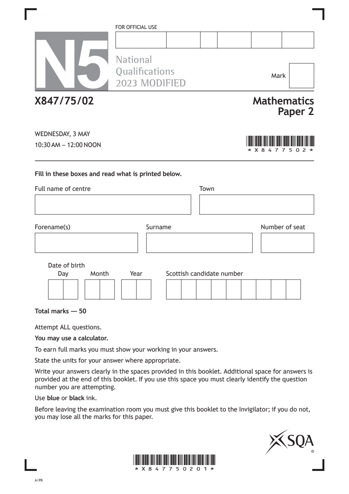
Selectable page text
FOR OFFICIAL USE
N5
National
Qualications
Mark
2023 MODIFIED
X847/75/02 Mathematics
Paper 2
WEDNESDAY, 3 MAY
10:30 AM – 12:00 NOON
*X8477502*
Fill in these boxes and read what is printed below.
Full name of centre Town
Forename(s) Surname Number of seat
Date of birth
Day Month Year Scottish candidate number
Total marks — 50
Attempt ALL questions.
You may use a calculator.
To earn full marks you must show your working in your answers.
State the units for your answer where appropriate.
Write your answers clearly in the spaces provided in this booklet. Additional space for answers is
provided at the end of this booklet. If you use this space you must clearly identify the question
number you are attempting.
Use blue or black ink.
Before leaving the examination room you must give this booklet to the Invigilator; if you do not,
you may lose all the marks for this paper.
©
*X847750201*
A/PBPDF page 2
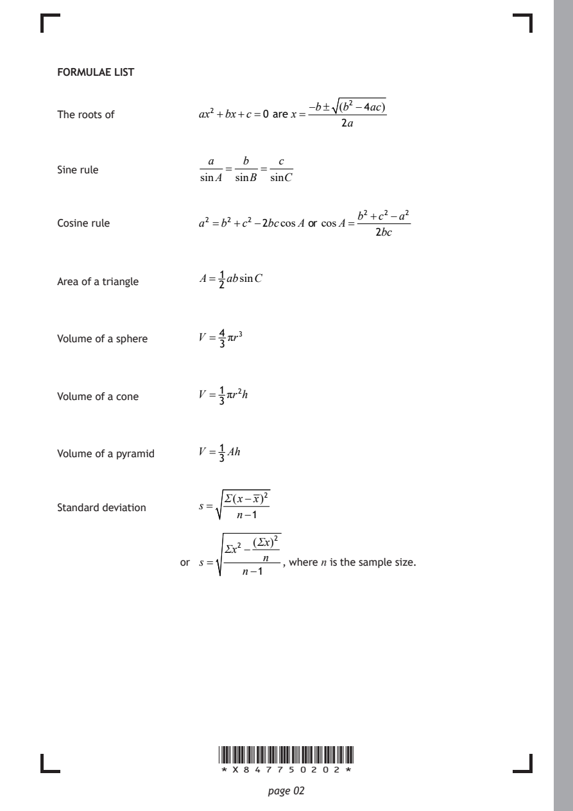
Selectable page text
FORMULAE LIST
−b± (b² −4ac)
The roots of ax² +bx+c=0 are x=
2a
a b c
Sine rule = =
sinA sinB sinC
b² +c²−a²
Cosine rule a² =b²+c² −2bccosA or cosA=
2bc
1
A= absinC
Area of a triangle
2
4
Volume of a sphere V = πr³
3
1
Volume of a cone V = πr²h
3
1
Volume of a pyramid V = Ah
3
Σ(x−x)²
Standard deviation s =
n−1
(Σx)²
Σx² −
n
or s = , where n is the sample size.
n−1
*X847750202*
page 02PDF page 3
Paper 2, Question 1Paper 2, Question 2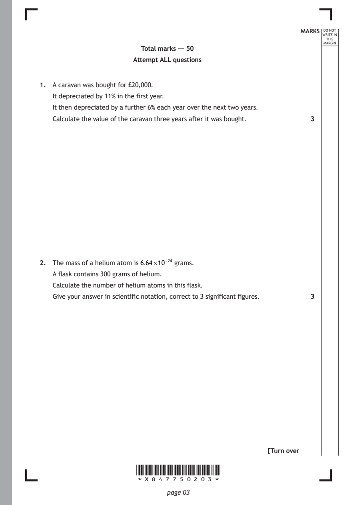
Selectable page text
MARKS _{W}^{D}_{R}^{O}_{I} _{T}^{N}OT
E IN
THIS
MARGIN
Total marks — 50
Attempt ALL questions
1. A caravan was bought for £20,000.
It depreciated by 11% in the first year.
It then depreciated by a further 6% each year over the next two years.
Calculate the value of the caravan three years after it was bought. 3
2. The mass of a helium atom is 6.64×10⁻²⁴ grams.
A flask contains 300 grams of helium.
Calculate the number of helium atoms in this flask.
Give your answer in scientific notation, correct to 3 significant figures. 3
[Turn over
*X847750203*
page 03PDF page 4
Paper 2, Question 3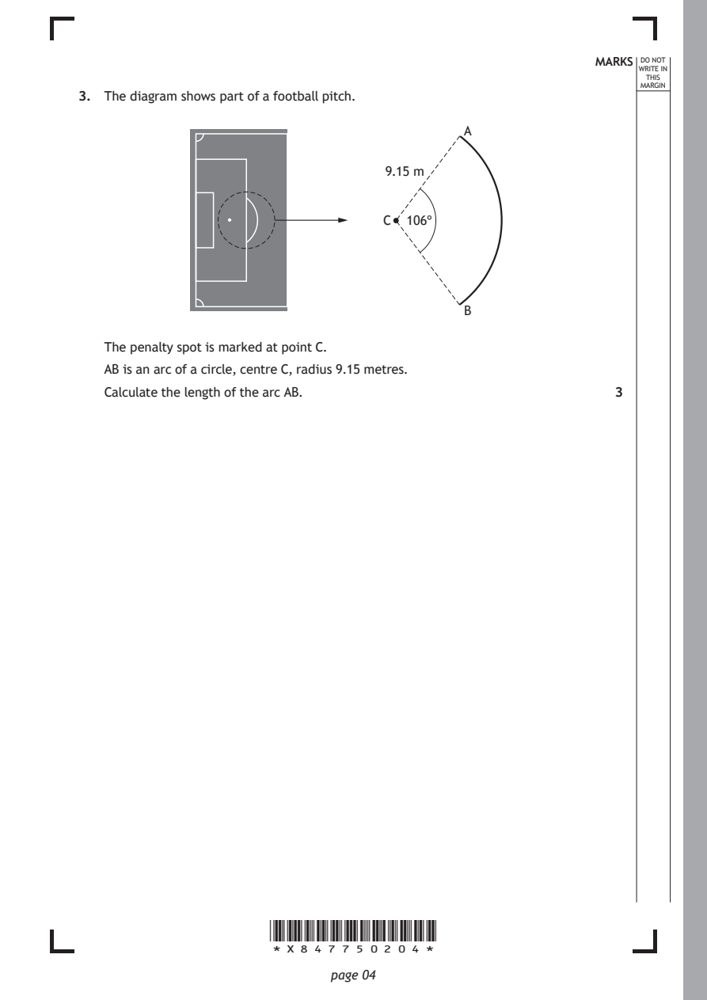
Selectable page text
MARKS _{W}^{D}_{R}^{O}_{I} _{T}^{N}OT
E IN
THIS
MARGIN
3. The diagram shows part of a football pitch.
A
9.15 m
C 106º
B
The penalty spot is marked at point C.
AB is an arc of a circle, centre C, radius 9.15 metres.
Calculate the length of the arc AB. 3
*X847750204*
page 04PDF page 5
Paper 2, Question 4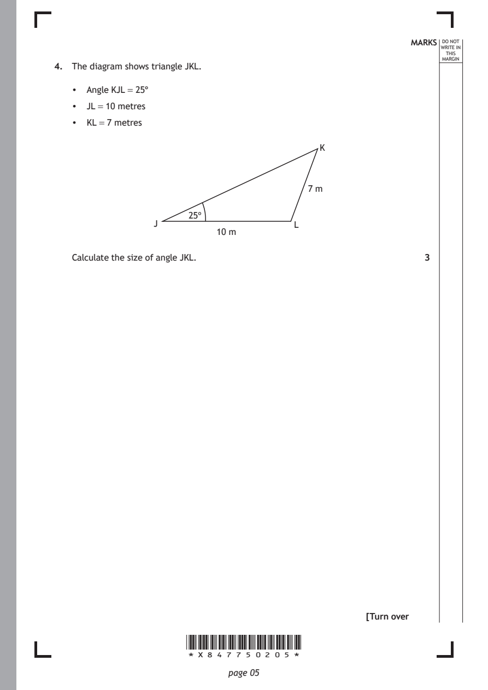
Selectable page text
MARKS _{W}^{D}_{R}^{O}_{I} _{T}^{N}OT
E IN
THIS
MARGIN
4. The diagram shows triangle JKL.
• Angle KJL = 25°
• JL = 10 metres
• KL = 7 metres
K
7 m
25º
J L
10 m
Calculate the size of angle JKL. 3
[Turn over
*X847750205*
page 05PDF page 6
Paper 2, Question 5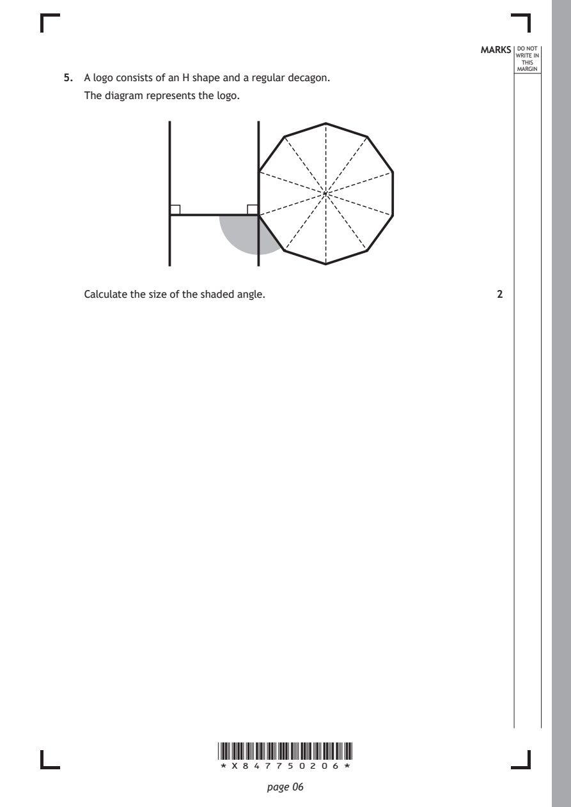
Selectable page text
MARKS _{W}^{D}_{R}^{O}_{I} _{T}^{N}OT
E IN
THIS
MARGIN
5. A logo consists of an H shape and a regular decagon.
The diagram represents the logo.
Calculate the size of the shaded angle. 2
*X847750206*
page 06PDF page 7
Paper 2, Question 6Paper 2, Question 7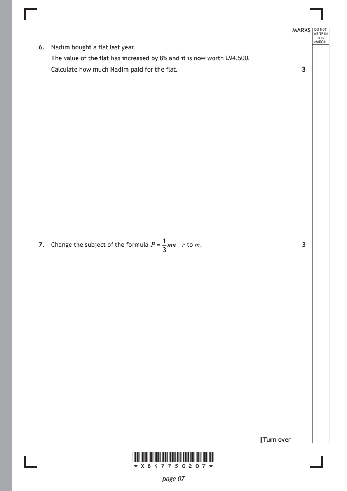
Selectable page text
MARKS _{W}^{D}_{R}^{O}_{I} _{T}^{N}OT
E IN
THIS
MARGIN
6. Nadim bought a flat last year.
The value of the flat has increased by 8% and it is now worth £94,500.
Calculate how much Nadim paid for the flat. 3
1
7. Change the subject of the formula P= mn−r to m. 3
3
[Turn over
*X847750207*
page 07PDF page 8
Paper 2, Question 8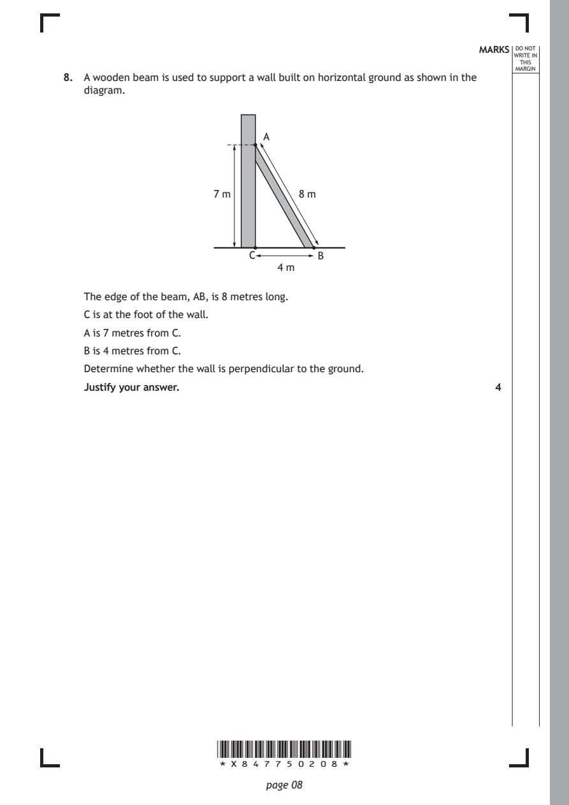
Selectable page text
MARKS _{W}^{D}_{R}^{O}_{I} _{T}^{N}OT
E IN
THIS
MARGIN
8. A wooden beam is used to support a wall built on horizontal ground as shown in the
diagram.
A
7 m 8 m
C B
4 m
The edge of the beam, AB, is 8 metres long.
C is at the foot of the wall.
A is 7 metres from C.
B is 4 metres from C.
Determine whether the wall is perpendicular to the ground.
Justify your answer. 4
*X847750208*
page 08PDF page 9
Paper 2, Question 9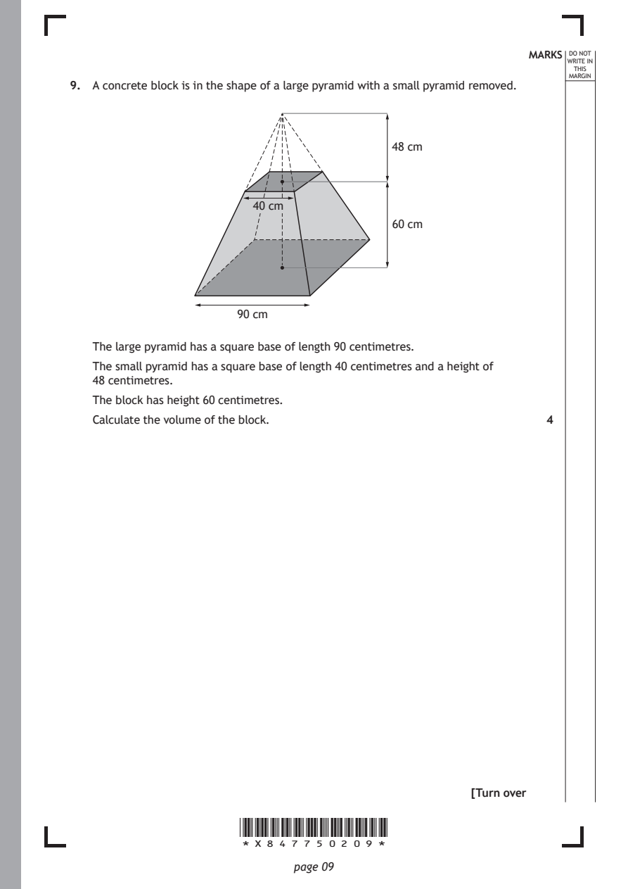
Selectable page text
MARKS _{W}^{D}_{R}^{O}_{I} _{T}^{N}OT
E IN
THIS
MARGIN
9. A concrete block is in the shape of a large pyramid with a small pyramid removed.
48 cm
40 cm
60 cm
90 cm
The large pyramid has a square base of length 90 centimetres.
The small pyramid has a square base of length 40 centimetres and a height of
48 centimetres.
The block has height 60 centimetres.
Calculate the volume of the block. 4
[Turn over
*X847750209*
page 09PDF page 10
Paper 2, Question 10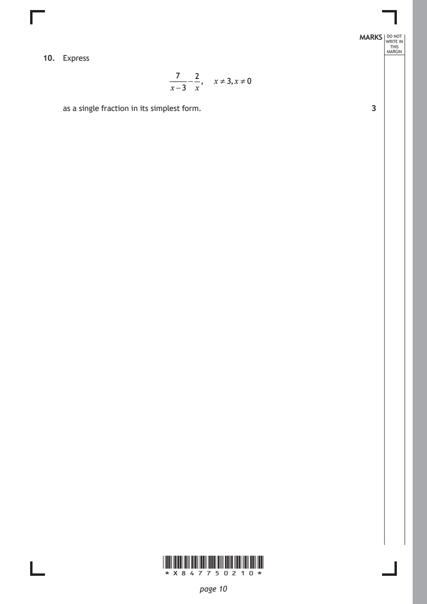
Selectable page text
MARKS _{W}^{D}_{R}^{O}_{I} _{T}^{N}OT
E IN
THIS
MARGIN
10. Express
7 2
− , x≠3,x≠0
x−3 x
as a single fraction in its simplest form. 3
*X847750210*
page 10PDF page 11
Paper 2, Question 11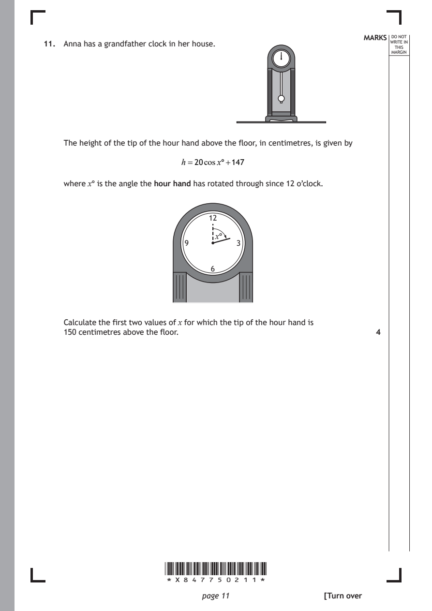
Selectable page text
MARKS _{W}^{D}_{R}^{O}_{I} _{T}^{N}OT
11. Anna has a grandfather clock in her house. E IN
THIS
MARGIN
The height of the tip of the hour hand above the floor, in centimetres, is given by
h=20cosx°+147
where x° is the angle the hour hand has rotated through since 12 o’clock.
12
x°
9 3
6
Calculate the first two values of x for which the tip of the hour hand is
150 centimetres above the floor. 4
*X847750211*
page 11 [Turn overPDF page 12
Paper 2, Question 12Paper 2, Question 13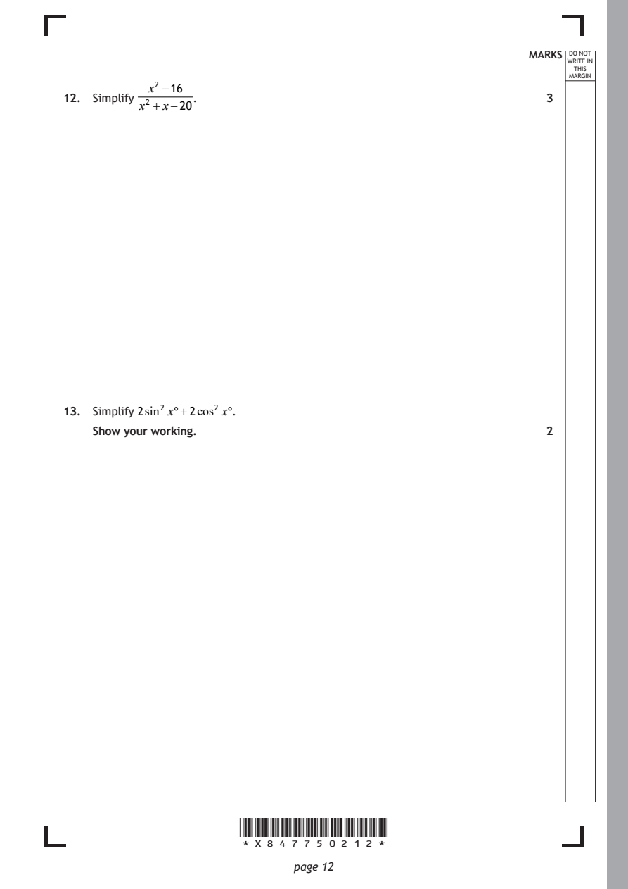
Selectable page text
MARKS _{W}^{D}_{R}^{O}_{I} _{T}^{N}OT
E IN
THIS
MARGIN
x² −16
12. Simplify . 3
x² +x−20
13. Simplify 2sin² x°+2cos² x°.
Show your working. 2
*X847750212*
page 12PDF page 13
Paper 2, Question 14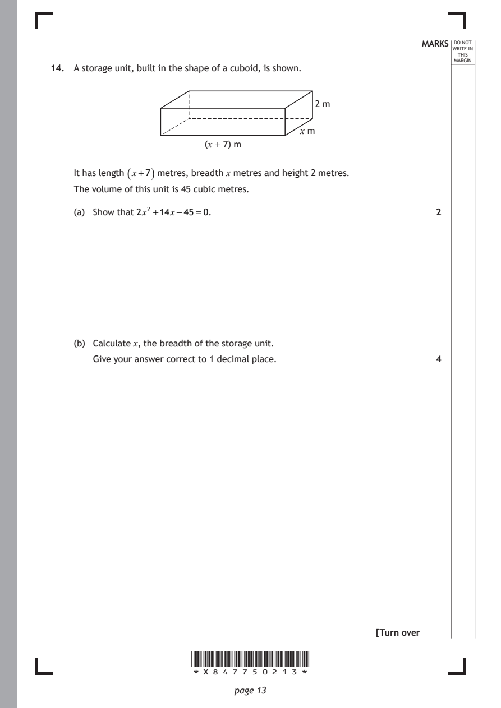
Selectable page text
MARKS _{W}^{D}_{R}^{O}_{I} _{T}^{N}OT
E IN
THIS
MARGIN
14. A storage unit, built in the shape of a cuboid, is shown.
2 m
x m
(x + 7) m
It has length ( x+7 ) metres, breadth x metres and height 2 metres.
The volume of this unit is 45 cubic metres.
(a) Show that 2x² +14x−45=0. 2
(b) Calculate x, the breadth of the storage unit.
Give your answer correct to 1 decimal place. 4
[Turn over
*X847750213*
page 13PDF page 14
Paper 2, Question 15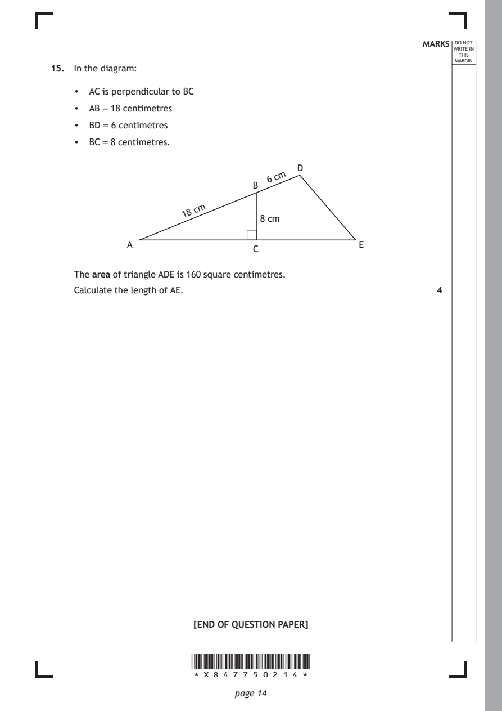
Selectable page text
MARKS _{W}^{D}_{R}^{O}_{I} _{T}^{N}OT
E IN
THIS
MARGIN
15. In the diagram:
• AC is perpendicular to BC
• AB = 18 centimetres
• BD = 6 centimetres
• BC = 8 centimetres.
m ^{D}
6
c
B
m
18
c
8 cm
A E
C
The area of triangle ADE is 160 square centimetres.
Calculate the length of AE. 4
[END OF QUESTION PAPER]
*X847750214*
page 14PDF page 15
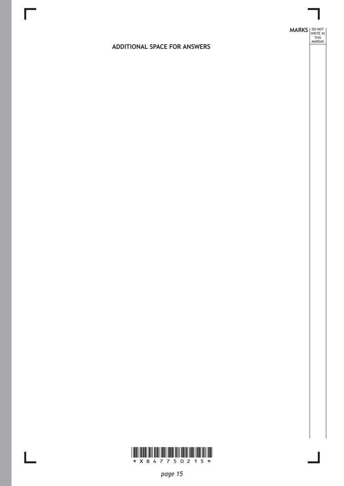
Selectable page text
MARKS _{W}^{D}_{R}^{O}_{I} _{T}^{N}OT
E IN
THIS
MARGIN
ADDITIONAL SPACE FOR ANSWERS
*X847750215*
page 15PDF page 16
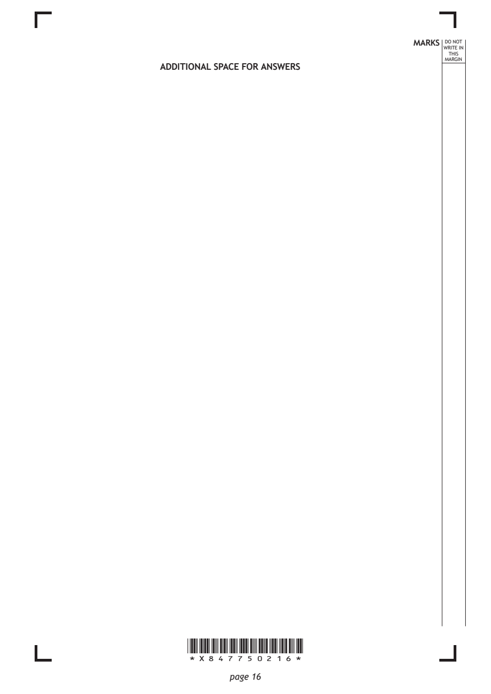
Selectable page text
MARKS _{W}^{D}_{R}^{O}_{I} _{T}^{N}OT
E IN
THIS
MARGIN
ADDITIONAL SPACE FOR ANSWERS
*X847750216*
page 16